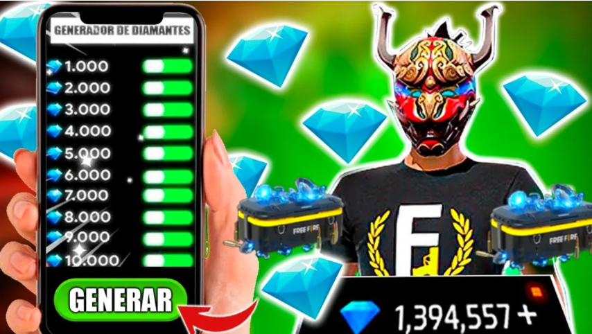
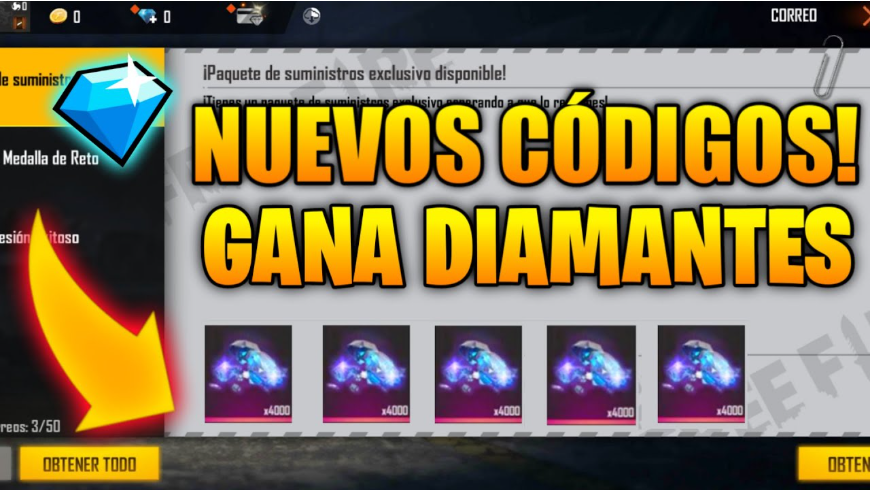
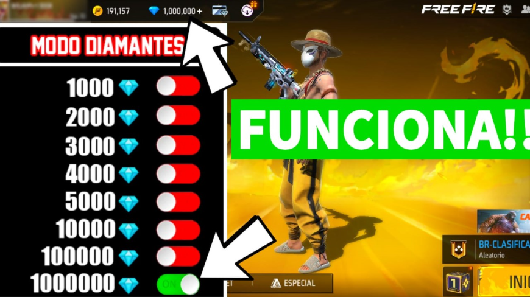

Cómo obtener diamantes gratis en Free Fire

Los diamantes en Free Fire son la moneda más importante del juego, ya que permiten desbloquear contenido exclusivo como skins, personajes y ventajas dentro del juego.
Muchos jugadores buscan formas de obtener diamantes gratis, pero es importante conocer los métodos reales y seguros para evitar perder la cuenta o caer en estafas.
Ver códigos actualizadosMétodos reales para conseguir diamantes

Existen diferentes formas legales de conseguir recompensas dentro del juego. La clave está en aprovechar los eventos y oportunidades oficiales que se activan constantemente.
Eventos dentro del juego
Free Fire lanza eventos con frecuencia donde puedes obtener recompensas gratis. Participar activamente en estos eventos es una de las mejores formas de avanzar.
Estos eventos incluyen misiones diarias, recompensas por inicio de sesión y desafíos especiales.
Aplicaciones de recompensas

Existen aplicaciones que permiten ganar dinero o tarjetas de regalo realizando tareas simples. Estas recompensas pueden usarse dentro del juego.
Evita los generadores de diamantes

Los generadores de diamantes son una de las principales estafas. Estas páginas prometen recompensas ilimitadas, pero en realidad buscan robar cuentas o información personal.
Estrategias para avanzar más rápido
Para mejorar tu progreso dentro del juego, es recomendable combinar diferentes métodos y mantener una rutina constante.
También puedes mejorar tu rendimiento revisando nuestras guías:
Consejos finales para mejorar tu cuenta
Para avanzar más rápido en Free Fire, es importante combinar diferentes estrategias. No dependas de un solo método, ya que el juego constantemente cambia y ofrece nuevas oportunidades.
Además, mantenerse informado sobre eventos y actualizaciones te permitirá aprovechar recompensas que muchos jugadores dejan pasar.
Artículos relacionados
Conclusión
Conseguir diamantes gratis es posible si utilizas métodos legales y seguros. La clave está en la constancia, la información y evitar prácticas peligrosas.